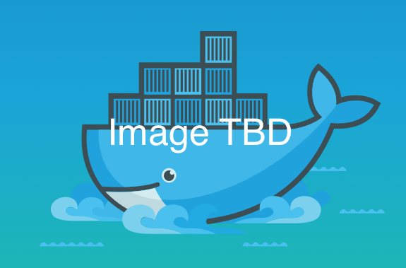

Introducing Docker
An intro module to get students on message with what docker is, and the priorities and concerns of distributed application dev and ops.
Hands up,
Who's ever been to dependency hell?
(Other circles of hell include scaling hell, deployment hell, and infrastructure hell)
- Ask a small class to tell stories to the group, or a large class to pair off and tell each other their stories
- then call a couple out for the room.
Dependency hell, infrastructure mismatches, and lack of scalability are all examples of problems with
Standardization and Encapsulation.
Luckily, this problem is not new.
- point out how the class's stories map to standardization and encapsulation problems;
- "dependency conflics are like fighting todlers; you have to encapsulate them in different rooms"
- back in the day, shipping cargo was a big problem - here are some 19th century devops struggling to deploy their latest product.
- huge delays, breakage and theft were caused by the fact that loose cargo had to be packed and unpacked at ports for redistribution
Encapsulation eliminates friction across infrastructure, and standardization facilitates scale.
- the great innovation of shipping containerization was the repacking was no longer necessary, allowing cargo to move from ship to train to truck - or aws to azure to on-premise - with far less friction.
- shipping wasn't the only example, either; standardization of replacable parts was a key methodological innovation that allowed the industrial revolution to scale so dramatically.
Docker proposes to be a
framework for service encapsulation
But what are the implications of this for developers , ops , and orgs ?
- the same opportunities that shipping and manufacturing found in encapsulation and standardization are available to the software industry; Docker proposes to be the framework to enable this, but first we should understand a bit about what the implications of this brave new modularized world are.
Monolith to Microservice

- software components, by which we mean chunks of software that can be independently swapped out, are as old as the dinosaurs
- in a traditional monolith, components might be libraries, whicih communicate via function calls or object instantiation
- but in a service-oriented architecture, independent services communicate via API - much like unix and the web.
- this presents a whole bunch of opportunities and challenges.
Dev opportunity: Service oriented arch is naturally polyglot.
- while it's possible to wrap and bind libraries from a whole bunch of different languages into one monolith, it's a bit of a pain.
- with encapsulated services, multi-language design is trivially realizable, which makes using the right tool for the job easy.
Dev challenge: Out-of-process communication is expensive .
- naively taking your monolith and replacing every function call with an api call is going to be a train wreck
- moving to a containerized world will require developers to re-image inter-component communication
- in our course on distributed application development, we'll talk about things like tolerant reader paradigm and coarse communication.
Ops opportunity: Encapsulated services scale asymmetrically.
- while monoliths can only be spun up as complete replicas, services can scale asymmetrically; launching more database processes doesn't bring every other service along with it as overhead, like simple replication of a monolith.
Ops challenge: Many-process applications require sophisticated monitoring, security, load-balancing and communication.
- with so many, and possibly even a variable number, of processes talking to each other, ops teams are going to have to have a sophisticated framework for keeping track of what's going on.
- opportunities present themselves for services that adapt to hardware failures on the fly; Docker services seek to be self-healing in these circumstances
- DDC will help with monitoring and process control, and security is built right into Docker's fundamental design, by leveraging things like kernel namespaces and docker network isolation.
- all these opportunities and challenges form a new sw design paradigm that point to new, or perhaps iterated, roles: those of the distributed application developer and ops manager.
- Now that we know that we want an encapsulated design pattern, how can we get there? Who knows what Conway's law is?
Conway's Law
"Organizations which design systems ... are constrained to produce designs which are copies of the communication structures of these organizations."
- M. Conway
- As we imagine breaking our monoliths up into a web of encapsulated services, it pays to think of the implications this paradigm has for our orgs.
Service based orgs naturally map to encapsulated arch, but also bring dev and ops closer together to build, ship and run the service in production. Therefore, minimizing friction between dev and ops is crucial.
- every business is always going to be organized into teams or units, for the sake of everyone's sanity.
- if the org chart lumps all of a specialization together, then that team will have to stay on top of their specialization for the entire project; this is a really huge mental model for sophisticated projects, and lumps everything together in a way that naturally rolls downhill to a monolith.
- instead, if we make mixed-skill teams for a service, Conway's law suggests that our applications will have an emergent structure closer to the encapsulation that brings so many benefits.
- But, this also implies that each team will be the unit most logically responsible for the lifetime of their service, meaning dev will have to work very closely with ops to not only build, but help ship and run the code they make.
Docker endeavors to:
Make containerization of services easy
Make orchestration of services easy
Eliminate friction between development and deployment
- All this business about encapsulation and standardization is what Docker does better than anyone else out there; we call this 'containerization', and Docker makes it a snap.
- In addition to simply encapsulating services, Docker anticiaptes the sophisticated communication needs that arise when putting containerized services together to make an app, and makes this orchestration easy.
- Finally, Docker also empowers developers and ops managers to work more closely together through the lifetime of a service, by removing barriers between dev and ops; as we'll see in the course of the workshop, ops teams can provide containerized services that are easy to stand up during prototyping and development, and which scale to production seamlessly.